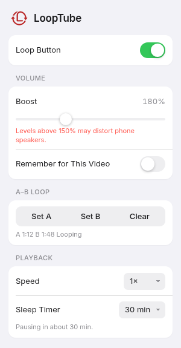

LoopTube 1.3 is installed
A loop button right inside the YouTube player, plus every playback control you've wished YouTube had.

Everything lives in one popup. Click the LoopTube icon in your toolbar.
The loop button sits right in the player controls, so it feels like part of YouTube. Press L on desktop. Every video remembers its own setting.
Hit Set A where it starts and Set B where it ends. Perfect for learning a riff, a dance move, or a single line of a lecture.
A built-in limiter keeps quiet videos clear instead of crackly. Turn on Remember for This Video and it keeps that level just for that one.
0.5× – 3×
Slow it down to learn. Speed it up to skim.
15–90 min
Fall asleep to music. It pauses for you.
Keeps playing
On Firefox for Android, audio continues with the screen off or in another app.
Pin it. Open the puzzle-piece menu in Firefox and pin LoopTube to your toolbar.
Play anything. Open a YouTube video and look for the loop button in the player.
Fine-tune. Click the toolbar icon for A–B loop, speed, boost, and the sleep timer.